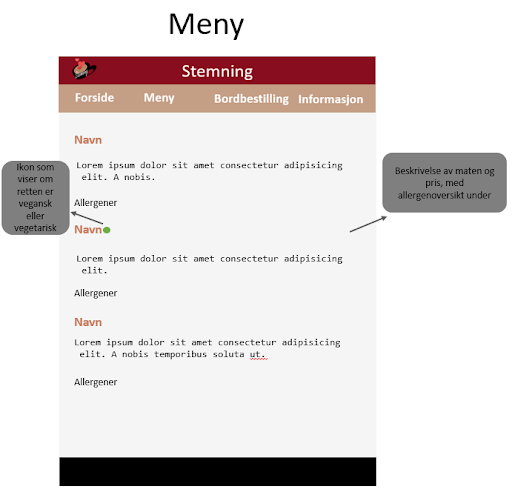

WebTek gruppeprosjekt: P2
Forfattere: Mia Bjørndal, Thea Kvinnegard, Natalie Sørensen Forshaw, Synne Ødegaard, Quynh-Anh Nguyen Pham
01.10.2020
Administrative detaljer
Klientens navn: Elise Råde, eier og daglig leder av Stemning kafé.
Nettsidens navn: Stemning kafè
Mening, mål og publikum
Hensikten med nettsiden er å informere om kaféen og gi kunder muligheten til å bestille bord hos kaféen. Det skal være enkelt å finne kaféens meny med informasjon om allergener og eventuelle vegetariske eller veganske retter, nyheter, åpningstider, ett skjema for bordbestilling samt et kart som viser kaféens beliggenhet. Kaféens kontaktinformasjon skal være lett tilgjengelig. Nettsidens brukere vil hovedsakelig være kunder eller potensielle kunder som skal bestemme seg for om de ønsker å besøke kaféen, og som derfor ønsker å se menyen, åpningstider og beliggenhet, samt bordbestillings skjemaet. Det er viktig at det tas hensyn til at både kunder og potensielle kunder kan tilhøre alle aldersgrupper. Brukerne kan være eldre mennesker, så brukeropplevelsen og brukergrensesnittet må designes deretter. Eventuelle andre kunder kan være bedrifter, jobbsøkere eller kritikere. For disse brukerne er kaféens kontaktinformasjon mer relevant.
Navigasjonsstruktur
Vi har valgt å bruke en clique-struktur som navigasjonsstruktur på nettsiden. Det skal være mulig å komme seg direkte fra forsiden til samtlige andre sider inkludert i nettsiden. Linkene til de andre sidene vil alltid være tilgjengelige i navigasjonsbaren, uavhengig av hvilken av sidene man er på. Vi har valgt denne navigasjonsstrukturen for å gjøre nettsiden så brukervennlig og oversiktlig som mulig. Dette er spesielt viktig fordi det er svært sannsynlig at brukerne av nettsiden for eksempel tilhører forskjellige aldersgrupper, og dermed vil ha ulik kompetanse og erfaring med å bruke nettsider. En annen årsak til at vi ønsker at alle sidene alltid skal være tilgjengelige er at brukerne av en nettside som denne sannsynligvis har en bestemt side de ønsker å finne (for eksempel meny eller åpningstider). Det er derfor hensiktsmessig at alle sidene er tilgjengelig uavhengig av hvor på nettsiden brukeren befinner seg. For å unngå å gjenta kode, skal vi bruke JavaScript for å hente navigasjonsbaren inn i alle HTML-dokumentene.
Sidens layout og utseende
Stilen til nettsiden som vil være gjeldende for alle sidene:
- Grid:
Vi har valgt å bruke grid for å designe nettsiden. Dette vil gjøre det enklere for oss å plassere elementer på siden, samt at å gjøre nettsiden responsiv vil bli lettere. - Header:
Height: 75px, background: #880D1E, font-family: “Open sans (sans serif)” (importert fra google og linket i html sånn at alle har tilgang til den), font-size: 50px, font-weight: 300, color: #F5F5F5. Logoen er plassert til venstre i headeren med width: 75px. - Navbar:
Plassert rett under headeren i en horisontal linje med 4 linker. Height: 50px, background: #C49E85, font-family: “Open sans (sans serif)”, font-size: 25px, color: #F5F5F5. On hover endrer font-weight seg til 700. - Navigasjonsside på mobil:
Height: 100%, background: #C97D60, font-family: “Open sans (sans serif)”, font-size: 25px, color: #F5F5F5. Under hver overskrift skal det stå en liten beskrivelse av siden du trykker deg inn på med samme farge, men font-size: default. - Main:
Height: 100%, kommer til å variere fra side til side mtp mengden med innhold, men footeren kommer til å være plassert under main til enhver tid. Font-family: “Open sans (sans serif)”, font-size: default, color: #000000, men alle h1-h6-elementer i main skal ha color: #C97D60. - Footer:
100px, background: #000000. Font-family: “Open sans (sans serif)”, font-size: default, color: #F5F5F5. Inneholder tekst og linker i form av bilder til sosiale media. Når man hovrer over bildene vil det vises tekst som viser hva det betyr (f.eks. vil det stå “Facebook” når man hovrer over logoen til Facebook). Teksten og bildene skal presenteres i fire kolonner (column-count: 4;). - Body width: 100%.
Da vi designet layouten til nettsiden, vektla vi at den skal være innbydende og skape et godt førsteinntrykk av kafeen, ettersom vi går ut fra at en stor del av brukergruppen vil være potensielle kunder. Det er også viktig at nettsiden er oversiktlig og brukervennlig, både for å gi brukerne en bedre brukeropplevelse og fordi enkelte brukere kanskje ikke har mye erfaring med avanserte nettsider. For å gjøre nettsiden så oversiktlig som mulig, har vi valgt å ha en navigasjonsbar med linker til samtlige sider på nettsiden øverst på siden. Linkene i navigasjonsbaren skal være “Forside”, “Meny”, “Bestill bord” og “Om oss”. Titlene på sidene skal være tydelige og enkle å forstå, slik at navigering mellom sidene blir så enkelt som mulig. Det skal i tillegg være mulig å komme tilbake til forsiden ved å klikke på logoen. På den måten kan de som er vant til å klikke på logoen for å komme til forsiden gjøre dette, mens brukere som ikke er klar over at dette kan gjøres kan klikke på “Forside”. På mobil klikker man på et ikon for å åpne navigasjonsbaren, fordi linkene i navigasjonbaren blir for små og vanskelige å trykke på når brukeren benytter siden på mobil. Her vil alle linkene til sidene og en beskrivelse av hva sidene inneholder ligge i en liste. Elise Råde ønsker at logoen skal være synlig på nettsiden. Vi har derfor valgt å sette logoen øverst på siden sammen med navnet på kaféen, slik at alle brukere kan se den. Footeren er felles for alle sidene. Den skal inneholde kontaktinformasjon, adresse og åpningstider, samt sosiale medier. Disse skal vises som ikonene til mediene de linker til. Grunnen til at vi velger disse fargene på tekst og bakgrunn er at de går godt sammen og skaper kontraster med teksten som gjør det lett å få øye på og lese. Fargene er varme og gir den ettertraktede kafe-følelsen som vi ønsker at skal lokke brukerne til kafeen vår. Vi har hover-effekt på linkene i navigasjonsbaren sånn at brukerne vet at de ikke er vanlig tekst, men at de kan trykkes på.
Innhold
- Forside - forside.html
Forsiden vil være den første siden som vises når brukeren besøker nettsiden. Siden dette vil være det første brukeren ser er det et viktig element for å danne førsteinntrykket til brukeren. Øverst på forsiden vil navnet på kafeen og logoen være, og dersom man trykker på logoen blir man tatt tilbake til forsiden igjen uansett hvilken side man befinner seg på. Under har vi en navigasjonsbar, her kan du navigere deg videre til de andre sidene. Disse funksjonene kommer til å være på alle sidene så du lett kommer fram dit du vil. Spesifikt for forsiden vil det være en bildekarusell med bilder av kafeens nyheter, her skal vi lokke kunden til kafeen med slagord som “stemningsgaranti” og en varm velkomst og oppfordring til å komme innom.. Vi skal bruke JavaScript for å lage bildekarusellen. Forsiden vil også inneholde bilder og nyheter om nye retter, eller andre nye tilskudd til kafeen. Kontaktinformasjon, adresse og sosiale media, eiere av nettsiden og utviklerne av den vil ligge i footeren. Dette vil gjelde alle sider. - Meny - meny.html
Menysiden skal hovedsakelig informere brukeren om hva kaféen serverer. I tillegg skal det være mulig å se om retten er vegetarisk/vegansk eller ikke, samt hvilke allergener det er i rettene. Retter som er vegetar/vegansk skal markeres med et ikon, slik at brukeren enkelt kan se dette, og det skal være lett å se om ikonet symboliserer vegansk eller om det symboliserer vegetarisk. Hva ikonene betyr skal stå forklart øverst på siden. Menysiden skal bestå av en liste over alt som tilbys på kafeen. Rettene skal være organisert i kategorier som drikke, smørbrød, desserter etc. Hver rett skal ha navnet på retten som overskrift. Under overskriften skal det være en beskrivelse av retten, etterfulgt av en liste med allergener. Det er viktig at beskrivelsene er kortfattede for å holde siden oversiktlig. Vi har valgt å vise allergenene under hver rett i stedet for å samle dem i en tabell for å gjøre dem mer synlige for brukeren, og da er det heller ikke behov for å bla gjennom og lese alt hvis du er ute etter informasjon om en enkelt rett. Prisen på retten skal stå til høyre for tittel og beskrivelse.  - Informasjon - informasjonsside.html
På informasjonssiden kan brukerne finne åpningstidene og beliggenheten til kaféen. Åpningstidene skal ligge øverst på siden. Under dette kan brukeren finne kaféens beliggenhet. Posisjonen skal vises på et kart (Google Maps), slik at brukeren kan se hvor kafeen ligger, og enkelt kan finne fram. Vi skal bruke JavaScript for å vise kartet. Sosiale media vil være tilgjengelig både på informasjonssiden og i footeren. Kaféen har en Facebook-side, Instagram-konto og Snapchat-konto. Disse nettsidene vil være linket til ikoner av sidenes logoer. Brukeren klikker på logoene for å komme til nettsidene. - Bordbestilling - bordbestilling.html
På bordbestillingssiden kan brukeren bestille bord hos kafeen. Siden skal inneholde et skjema med felter som må fylles inn. Brukeren skriver inn ønsket dato og klokkeslett, navn, antall personer og eventuelle kommentarer. Alle felter unntatt “eventuelle kommentarer” skal være markert med en stjerne. Dersom disse ikke er fylt ut, vil det komme opp en feilmelding, og skjemaet blir ikke sendt inn. Dersom brukeren skriver inn en ugyldig dato vil heller ikke skjemaet sendes. Det skal heller ikke være mulig å skrive inn et negativt antall personer. Hvis brukeren ønsker å bestille bord for mer enn ti personer, vil vedkommende få beskjed om å ringe kaféen for å bestille. Det vil informeres om dette før skjemaet. Før skjemaet skal det også være en kort beskrivelse av skjemaet og en forklaring på hva stjernene betyr. Når brukeren har sendt inn skjemaet vil nettsiden fortelle brukeren at bestillingen har blitt sendt. Fordi vi ikke skal bruke databaser, vil ikke informasjonen lagres.
Minst fire JavaScript-applikasjoner
- Roll-down meny:
Vi skal bruke javascript til å implementere en roll-down meny, som skal ligge øverst i hjørnet i headeren når siden er mindre enn 480px. Vi bruker ikke en roll-down meny når siden er større, fordi det er mer oversiktlig å la emnene stå i headeren når siden er stor nok til det. Spesielt for eldre er det lettere, da de ikke nødvendigvis vet hvor de skal lete for å finne emnene. Vi lar ikke emnene stå i headeren når siden er mindre, siden det kan blir veldig rotete. - Bordbestillings-reguering:
Vi har en egen side for bordbestilling, som skal inkludere input elementer for dato og klokkeslett, navn, antall personer og eventuelle kommentarer. Vi inkludere også at noen input elementer må være fylt ut for å kunne sende dokumentet. Dette vil være alle utenom eventuelle kommentarer.. Under antall personer skal det ikke være mulig å bestille bord for mindre enn 0 eller flere enn 8. Da skal det komme opp et varsel om at de må ringe og avtale med kafeen. Det skal heller ikke være mulig å bestille bord til utenom åpningstiden, som kommer til å avhenge av hvilken dag det er. - Bordbestillings-innsending:
Siden vi ikke skal bruke database, vil det kun komme opp en varsel på siden som sier at du har sendt inn en bestilling, men vi sender den ikke noe sted. Dette skal også implementeres med javascript. Der skal noe av dataen man puttet inn i skjemaet vises som en bekreftelse på at det var det du la inn og er riktig. - Bildekarusell
På forsiden til nettsiden skal det øverst på siden ligge en bildekarusell. Denne karusellen skal vise litt av det kafeen server o.l. Den skal skifte bilde automatisk etter 6 sekunder, og nye bildet skal “skyve” det forrige bildet ut av rammen. Det skal også være mulig å bytte bildet selv ved å trykke på piler som ligger på bildet, til høyre og venstre. Hvis skjermen er over 480px så kan man trykke på et bilde i bildekarusellen, og bildet vil bli større.
Plan
Her vil det være en oversikt over alle filene vi kommer til å bruke og en oversikt over hvem som har ansvaret for de forskjellige tingene. Det vil være tidsfrister for hva som må være ferdig når. Den som er satt opp med ansvaret vil ikke være den som skal gjøre alt, men den som har hovedansvaret for den delen. Alle skal hjelpe til der det trengs, og det er viktig å hjelpe hverandre og bistå med motivasjon og kunnskap. P3 må være ferdig en stund før 5.November, slik at testing og P4 kan gjøres ferdig. 25.Oktober er fristen for at p# skal være ferdig internt i gruppa. Dette fører til at HTML filene må være ferdig onsdag 14.oktober, slik at Javaskript kan ha alt ferdig og koble sammen det en trenger.
Filer:- felles.html
- forside.html
- meny.html
- info.html
- bestilling.html
images/
- logo.png
- navigasjonsstruktur.png
- ukasrett.jpg
- nyhet1.jpg
- nyhet2.jpg
- twitter.png
- facebook.png
- instagram.png
- snapchat.png
bildekarusell/ (her skal bildene til bildekarusellen ligge)
- bildeavkafe.jpg
- matrett1.jpg
CSS/
- info.css
- forside.css
- meny.css
- style.css
- bestilling.css
script/
- bildekarusell.js
- rolldown.js
- bordbestilling.js
Arbeidsfordeling og frister
| Filnavn | Beskrivelse | Ansvarlig | Frist |
|---|---|---|---|
| felles.html | Felles html-kode for alle sidene | Natalie og Synne | 14.10.2020 |
| forside.html | Forsiden, det første man kommer til | Anh | 14.10.2020 |
| meny.html | Her kommer info om hva som serveres | Mia | 14.10.2020 |
| info.html | All nyttig info, om kontakt og sted | Synne | 14.10.2020 |
| bestilling.html | Bestille bord | Synne | 14.10.2020 |
| logo.png | Logoen til kafeen | Alle | 25.10.2020 |
| navigasjonsstruktur.png | Hvordan de enkelte sidene henger sammen | Alle | 25.10.2020 |
| bildeavkafe.jpg | Bilde av kafeen | Alle | 25.10.2020 |
| matrett1.jpg | Bilde av en matrett | Alle | 25.10.2020 |
| ukasrett.jpg | Bilde av ukas rett | Alle | 25.10.2020 |
| nyhet1.jpg | Bilde av en nykommer | Alle | 25.10.2020 |
| nyhet2.jpg | Bilde av en til nykomme | Alle | 25.10.2020 |
| info.css | Styling av informasjonssiden | Natalie | 25.10.2020 |
| forside.css | Styling av forsiden | Anh | 25.10.2020 |
| meny.css | Styling av menyen | Mia | 25.10.2020 |
| style.css | Styling av hele nettsiden | Natalie | 25.10.2020 |
| bestilling.css | Styling av bordbestilingssiden | Synne | 25.10.2020 |
| bildekarusell.js | Bildefremvisning på forsiden | Thea | 25.10.2020 |
| rolldown.js | Roll-down meny som skal ligge i header | Thea | 25.10.2020 |
| bordbestilling.js | Innsamling av informasjon til bordbestilling | Thea | 25.10.2020 |